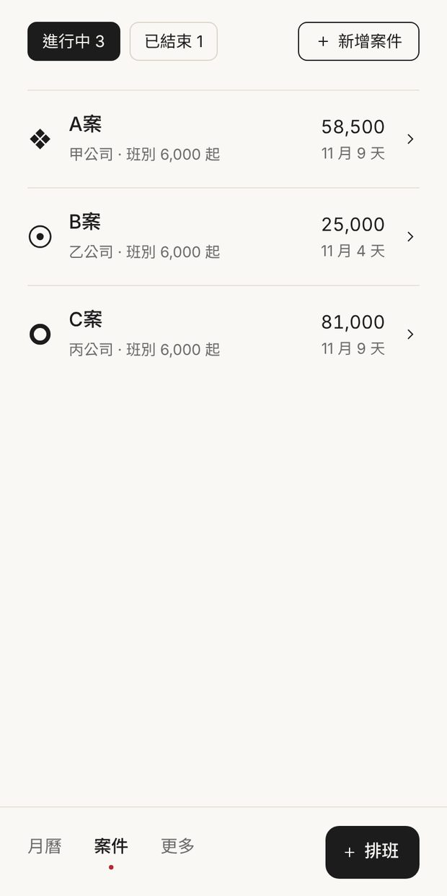
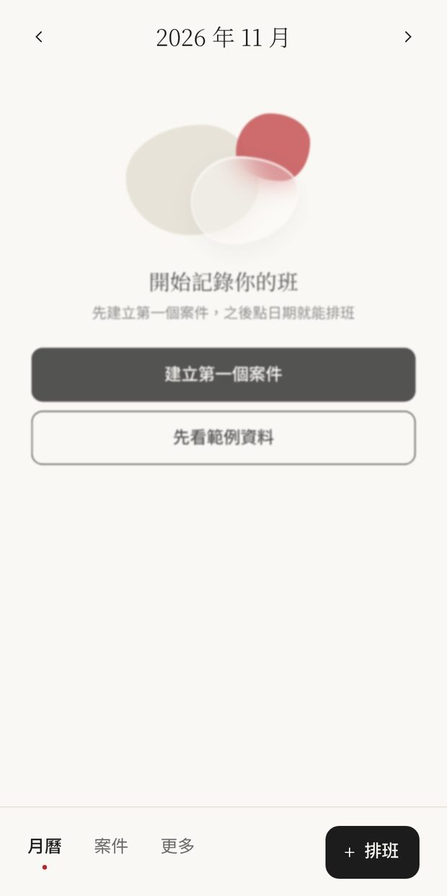
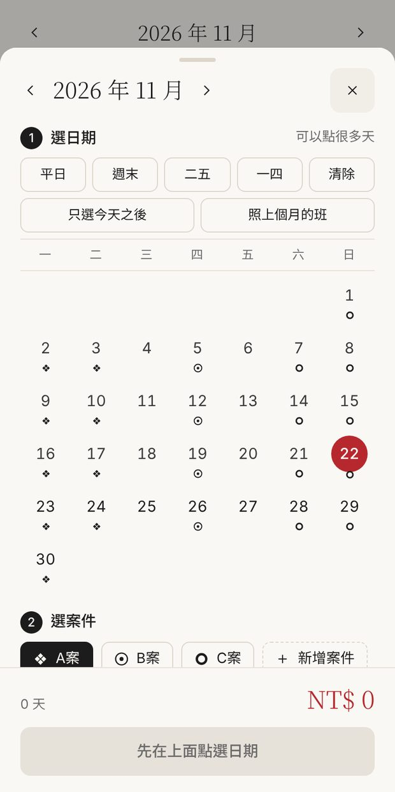
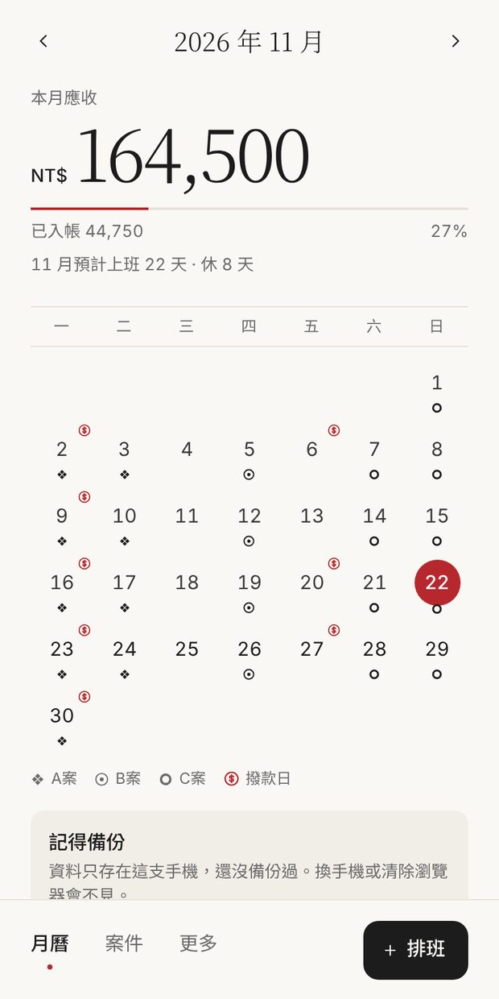
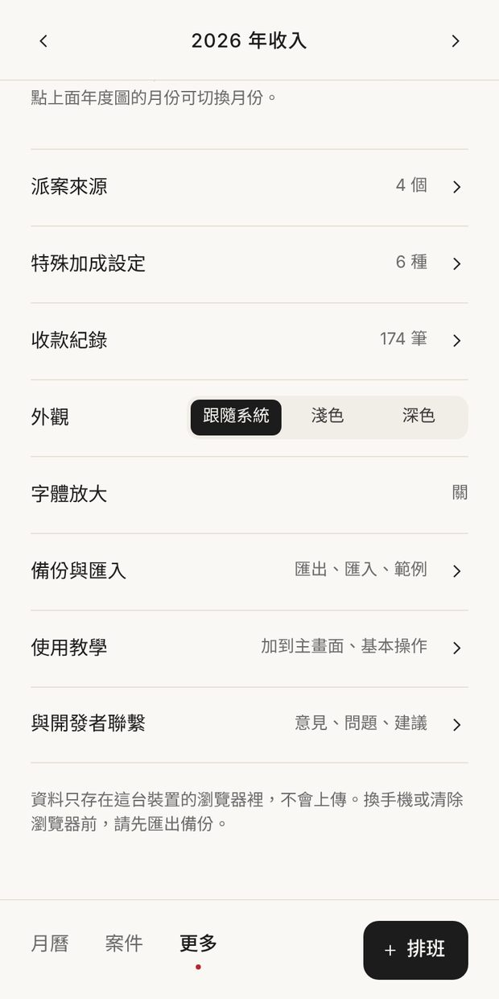
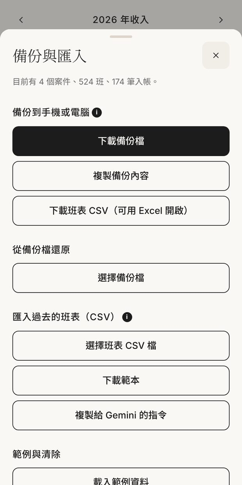

接案收入
使用教學
iPhone／Android 都適用
記班表、算每月收入、追蹤錢有沒有入帳。
資料只存在你的手機，不用註冊，也不會上傳。
資料只存在你的手機，不用註冊，也不會上傳。
1 加到手機主畫面
只要做一次，之後點圖示就能開。
從 LINE 點進來的話：請點右上角「⋯」→「用瀏覽器開啟」。iPhone 用 Safari，Android 用 Chrome。
iPhone
- 用 Safari 開啟本頁。
- 點下方 分享 （找不到就先點「⋯」）
- 往下滑，點 加入主畫面
- 點右上角 新增。
Android
- 用 Chrome 開啟本頁。
- 點右上角 選單
- 點 加到主畫面（或「安裝應用程式」）。
- 點 新增 或 安裝。
iPhone 請注意：Safari 和主畫面圖示的資料是分開的。請一開始就從主畫面圖示使用。
2 建立案件、排班
先建立案件
「案件」＝你接的一份工作。
- 點下方 案件，再點 新增案件。
- 填 名稱、派案來源。
- 設定 薪資（依時間算，或單次固定）。
- 選 收款週期（週收、雙週收、月收）。
- 按 儲存。


想先逛逛？點首頁的 先看範例資料。
再排班
- 點右下角 ＋ 排班。
- 選日期，可一次點很多天。
- 選案件和上班時間。
- 按儲存，月曆就會出現記號。

點月曆日期可看或修改當天的班。向左滑可刪除。
3 看收入、確認入帳
- 首頁大數字＝本月應收。
- 有 $ 小圓圈 的日子＝撥款日。
- 在「即將入帳」，收到錢就點前面的圓圈。點錯可復原。
- 點 更多，看全年收入圖。


實收金額不同？到「更多 → 收款紀錄」修改。
4 備份（很重要）
換手機、清除瀏覽器資料、刪掉圖示，資料都可能不見。建議每月備份一次。
備份
- 點 更多 → 備份與匯入。
- 點 下載備份檔，存到手機或傳給自己。
還原、換手機
- 在新手機開啟，進 備份與匯入。
- 點 選擇備份檔。
- 選 加進現有資料（較安全）。

5 常見問題
改薪資，過去的班會變嗎？
會先問你。案件頁點開案件 →「編輯」，儲存後可選「全部」、「今天起」或「只用在之後」。
案件做完了？
案件頁點開案件，按「結案」。紀錄都還在。
補排過去的班？
撥款日已過的話，App 會問你是否已領過，可一次標為已入帳。
資料不見了？
常見原因：
① 開啟方式不同（例如在 LINE 裡開）。請固定用主畫面圖示。
② iPhone 的 Safari 和主畫面資料是分開的。
③ 清除過瀏覽器資料。只能用備份檔還原。
字太小？想用深色？
「更多」裡可開「字體放大」，「外觀」可選深色。
能同步到別支手機嗎？
不行。請用「備份 → 匯入」搬資料。也沒有推播通知。
6 聯絡開發者
有問題或想要新功能，直接告訴我們。
- 點 更多 → 與開發者聯繫。
- 選類型，寫下想說的話。
- 按 送出。